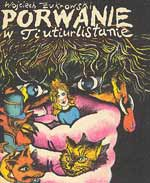

reżyseria: Zdzisław Kudła, Franciszek Pyter
scenariusz: Zdzisław Kudła
(na podstawie książki Wojciecha Żukrowskiego)
zdjęcia: Dorota Poraniewska
muzyka: Tadeusz Kocyba, Zenon Kowalowski
głosów użyczyli: Andrzej Gawroński, Ewa Kania, Kazimierz Brusikiewicz, Joanna Żółkowska, Iga Cembrzyńska, Wiesław Michnikowski.
produkcja: Studio Filmów Animowanych Bielsko Biała
Film animowany dla dzieci.
Powieść "Porwanie w Tiutiurlistanie" - rodzaj surrealistycznych, bajkowych fantasmagorii stała się inspiracją dla bardzo ciekawego plastycznie filmu, który zdobył kilka nagród na festiwalach dziecięcych.
Królewna Wiolinka została porwana.
Aby nie dopuścić do wojny Kogut Kapral Marcin Pypeć, Lisica Chytraska i Kot Mysibrat Miauczura wyruszają na jej poszukiwanie. Na szczęście odnajdują ją, ale mają nie lada kłopot z Cyganem Nagniotkiem, który jest sprawcą porwania.
Wiolinka okazuje się być zaczarowana i wyprawa ratunkowa musi pokonać jeszcze złe moce.